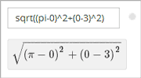
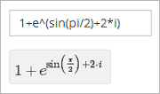
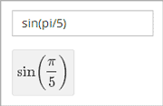
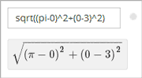
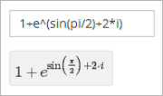
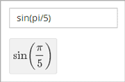
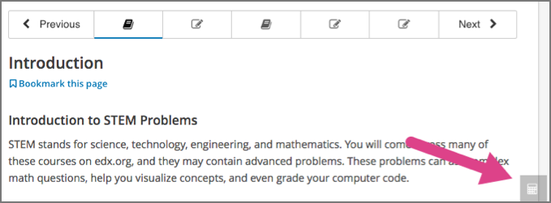

12.1. Completing Mathematical and Scientific Assignments#
This topic describes how to enter mathematical and scientific expressions for problems in your edX course.
12.1.1. Overview of Mathematical and Scientific Expressions#
You might want to enter a mathematical or scientific expression into an assignment in the body of your course, into the edX calculator tool, or into a course discussion.
For assignments in the body of the course and for the calculator tool, you enter plain text, and the edX system then converts your text into numbers and symbols that appear below the response field. For more information, see Entering Math Expressions in Assignments or the Calculator.
 





{kind=link}
{kind=link}
{kind=link}
For course discussions, you use MathJax to format the text that you type, and the system then converts your text into a mathematical expression. For more information, see Entering Math Expressions in Course Discussions.
12.1.2. Completing Mathematical Problems with Screen Readers#
EdX has carefully designed assessments that are accessible to screen readers. However, because of a limitation with HTML and screen reader technology, screen readers may not be able to read math problems in edX courses by default.
To access these problems with a screen reader, use one of the following methods.
If your browser and screen reader both support MathML, specify MathML as your preferred math renderer in MathJax.
Switch from your screen reader’s Interactive mode to Reading mode.
Note
Your screen reader may use different names for Interactive mode and Reading mode.
In Interactive mode, learners use the Tab key to move from one interactive element to the next.
In Reading mode, learners use the arrow keys to read all of the content in a document, and not just the interactive elements.
For more information about how to make sure that your screen reader reads all available content, see the instructions for your screen reader.
12.1.3. Entering Math Expressions in Assignments or the Calculator#
Both the calculator and the response fields in math problems accept a selection of characters that represent numbers, operators, constants, functions, and other mathematical concepts. You might recognize parts of this system if you have used math programs before.
Note
If your course offers the calculator tool, the calculator appears as a small icon on all pages in the body of the course. To open the calculator, select the calculator icon. To close the calculator, select the X that appears when the calculator is open.
{kind=link}
The calculator includes an information page that shows an abbreviated version
of the information in this topic. To see the information page, select the
circled i icon next to the input field.
{kind=link}
When you enter your plain text into the calculator or the response field, follow these guidelines.
Arithmetical operations: Use standard characters for addition (+), subtraction (-), multiplication (*), and division (/).
Multiplication: Be sure to indicate multiplication explicitly. That is, instead of
mc^2typem*c^2, and instead of5a+4b+3ctype5*a+4*b+3*c.
Operation order: Use parentheses (
( )) to specify the order of operations and to make your expression as clear as possible. Use curved parentheses (( )) only. Do not use brackets ([ ]) or braces ({ }).Exponents or superscripts: Insert a caret (^) before an exponent or superscript. If the exponent or superscript includes multiple characters or is an expression, surround the expression with parentheses. For example, you can enter
x^norx^(n-1).Subscripts: Insert an underscore (_) before a subscript to indicate a subscript. If the subscript has multiple characters, type the characters without a space. For example, you can enter
v_IN-v_OUT. Note, however, that subscripts cannot currently include operators or parentheses.Avoid whitespace.
Do not use equal signs (=).
Because the system is case-sensitive, make sure you use uppercase and lowercase letters carefully.
For more information about the types of characters you can use, see below.
Note
The edX system accepts both constants and metric affixes. Be careful to distinguish between constants and metric affixes. Constants stand alone, while metric affixes must be combined with numbers.
For example, c can be a constant representing the speed of light or a
metric affix meaning “centi”. When you use c as a metric affix, do not
include a space between c and the number. When you use c as a
constant, indicate multiplication explicitly. The following examples show the
difference:
2c=0.02(2 multiplied by 0.01)2*c=599584916.0(the speed of light multiplied by 2)2M=2,000,000(2 multiplied by 1,000,000)2*M= 2 multiplied by the variable M
For more information, see Scientific Notation and Metric Affixes or Constants.
12.1.3.1. Numbers#
You can use the following types of numbers.
Integers: 2520
Fractions: 2/3
Normal floats: 3.14
Floats with no integer part: .98
The largest number you can use is 1.7977e+308, which is the largest float possible in the Python programming language.
12.1.3.2. Scientific Notation and Metric Affixes#
You can enter metric affixes or scientific notation to indicate very large or
very small numbers. For scientific notation, you can type either a caret (^) or
the letter e followed by a number to indicate an exponent. You can use both
positive and negative exponents.
For example, to indicate 0.012, you can enter either of the following
expressions:
1.2*10^-21.2e-2
To indicate -440,000, you can enter either of the following expressions:
-4.4*10^5-4.4e5
The following table shows how to enter numbers with metric affixes, with
scientific notation, and with e notation.
To enter this number |
Use this metric affix |
Use this scientific notation |
Use this |
Other notation |
|---|---|---|---|---|
0.1 |
1d (deci) |
10^-1 |
1e-1 |
|
0.01 |
1c (centi) |
10^-2 |
1e-2 |
1% (percent) |
0.001 |
1m (milli) |
10^-3 |
1e-3 |
|
0.000001 |
1u (micro) |
10^-6 |
1e-6 |
|
0.000000001 |
1n (nano) |
10^-9 |
1e-9 |
|
0.000000000001 |
1p (pico) |
10^-12 |
1e-12 |
|
1000 |
1k (kilo) |
10^3 |
1e3 |
|
1,000,000 |
1M (mega) |
10^6 |
1e6 |
|
1,000,000,000 |
1G (giga) |
10^9 |
1e9 |
|
1,000,000,000,000 |
1T (tera) |
10^12 |
1e12 |
Note
When you use metric affixes or e notation, make sure you do not
include spaces between the number and the metric affix or the e.
12.1.3.3. Constants#
You can use several different constants in your mathematical expressions.
Note
When you enter constants multiplied by a number, make sure to
indicate the multiplication explicitly. For example, enter 2*c instead of
2c and -4*i instead of -4i.
Constant |
Value |
|---|---|
|
The speed of light in m/s (2.998^8) |
|
Euler’s number (2.718…) |
|
Gravity (9.80 m/s^2) |
|
The square root of -1 |
|
The square root of -1 |
|
The Boltzmann constant (~1.38^-23 in Joules/Kelvin) |
|
The ratio of a circle’s circumference to its diameter (3.14159…) |
|
The fundamental charge (~1.602^-19 Coloumbs) |
|
The positive difference between 0K and 0°C (273.15) |
12.1.3.4. Greek Letters#
To use any of the following Greek letters, type the name of the letter in the calculator or the response field.
Name |
Letter |
|---|---|
alpha |
α |
beta |
β |
gamma |
γ |
delta |
δ |
epsilon |
ϵ |
varepsilon |
ε |
zeta |
ζ |
eta |
η |
theta |
θ |
vartheta |
ϑ |
iota |
ι |
kappa |
ϰ |
lambda |
λ |
mu |
μ |
nu |
ν |
xi |
ξ |
pi |
π |
rho |
ρ |
sigma |
σ |
tau |
τ |
upsilon |
υ |
phi |
ϕ |
varphi |
φ |
chi |
χ |
psi |
ψ |
omega |
ω |
12.1.3.5. Functions#
To use a function, type the letters that represent the function, and then
surround the expression in that function with parentheses. For example, to
represent the square root of 4*a+b, type sqrt(4*a+b).
You can use the following functions.
Common functions
sqrt
log10
log2
ln
exp
abs
Trigonometric functions and their inverses, as well as hyperbolic trigonometric functions and their inverses.
Function
Inverse
Hyperbolic Function
Inverse
sin
arcsin
sinh
arcsinh
cos
arccos
cosh
arccosh
tan
arctan
tanh
arctanh
sec
arcsec
sech
arcsech
csc
arccsc
csch
arccsch
cot
arccot
coth
arccoth
Factorials: Enter factorials as
fact(3)orfactorial(3). You must use integers. For example, you cannot enterfact(1.5).A “parallel resistors” operator (
||). For example,1 || 2represents the resistance of a pair of parallel resistors (of resistance 1 and 2 ohms), evaluating to 2/3 (ohms).
12.1.4. Entering Math Expressions in Course Discussions#
Entering math expressions in course discussions is different from entering math expressions in a math problem or in the calculator. In course discussions, you use MathJax to format the text that you type.
For detailed information about how to enter math expressions in course discussions, see Math Formatting in Course Discussions.